Efficient Reflectance Capture Using an Autoencoder
Kaizhang Kang*, Zimin Chen*, Jiaping Wang, Kun Zhou and Hongzhi Wu
ACM Trans. on Graphics (Proc. SIGGRAPH 2018), 37, 4 (Aug. 2018), 127.
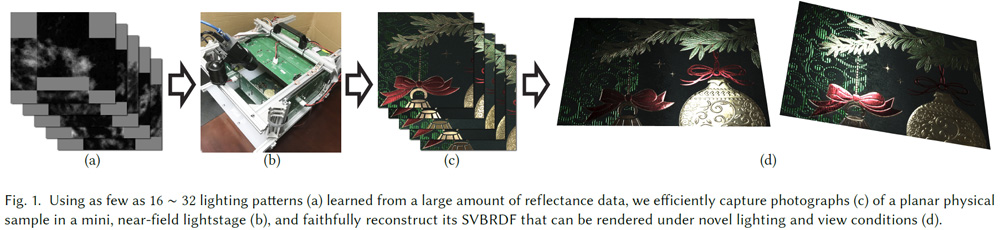
Kaizhang Kang*, Zimin Chen*, Jiaping Wang, Kun Zhou and Hongzhi Wu
ACM Trans. on Graphics (Proc. SIGGRAPH 2018), 37, 4 (Aug. 2018), 127.
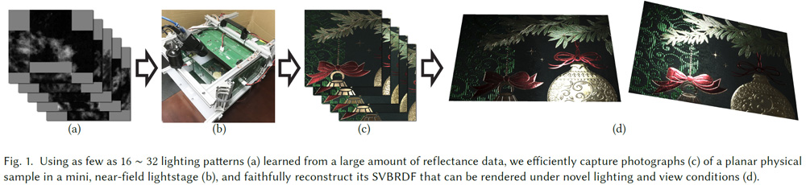
Abstract
We propose a novel framework that automatically learns the lighting patterns for efficient reflectance acquisition, as well as how to faithfully reconstruct spatially varying anisotropic BRDFs and local frames from measurements under such patterns. The core of our framework is an asymmetric deep autoencoder, consisting of a nonnegative, linear encoder which directly corresponds to the lighting patterns used in physical acquisition, and a stacked, nonlinear decoder which computationally recovers the BRDF information from captured photographs. The autoencoder is trained with a large amount of synthetic reflectance data, and can adapt to various factors, including the geometry of the setup and the properties of appearance. We demonstrate the effectiveness of our framework on a wide range of physical materials, using as few as 16~32 lighting patterns, which correspond to 12~25 seconds of acquisition time. We also validate our results with the ground truth data and captured photographs. Our framework is useful for increasing the efficiency in both novel and existing acquisition setups.
Downloads
Paper [.PDF, Low-res, 4.5MB] [ACM Digital Library]
Supplemental Material [.PDF, 0.1MB]
Bibtex [.TXT]
Video [.MP4, 164MB] [Youtube]
Slides [.PDF, 8.0MB]
Sample Lighting Patterns
Below are the 32 lighting patterns trained using 1 million synthetic lumitexels, generated with the anisotropic GGX BRDF model. Please refer to our paper for more details.
 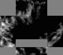 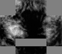 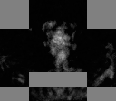
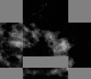 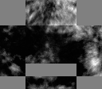 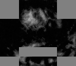 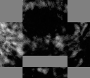
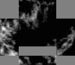 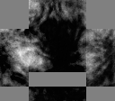 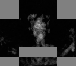
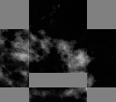 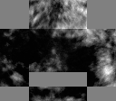 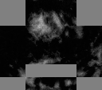 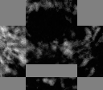 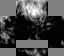 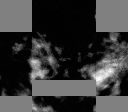 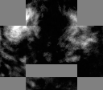 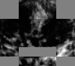 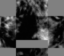 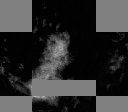 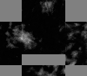 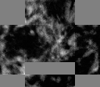
 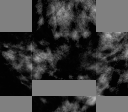 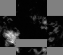 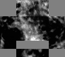
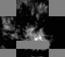 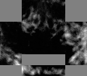 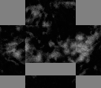 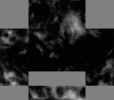
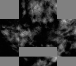 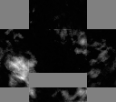 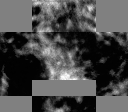
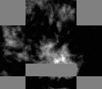 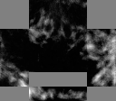 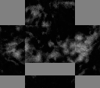 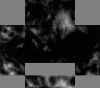 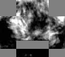
 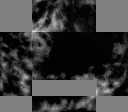 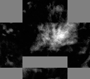
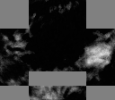 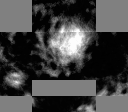 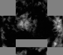 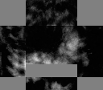
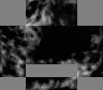 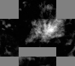
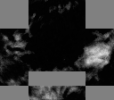 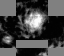 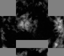 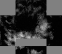